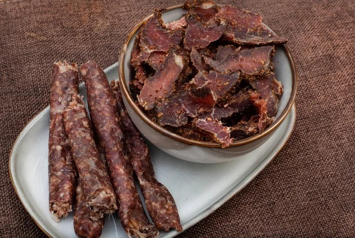
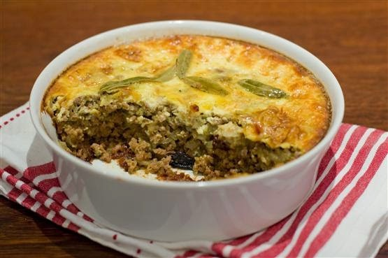
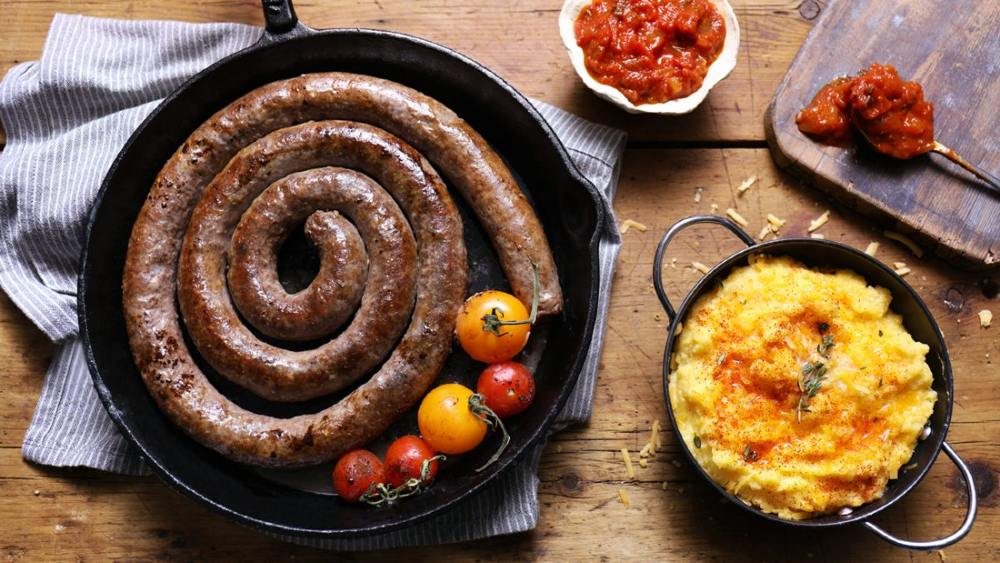
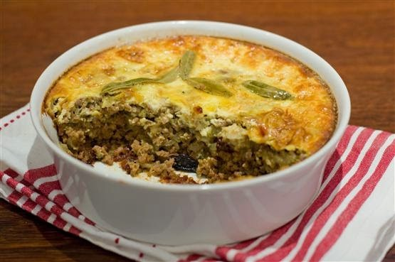
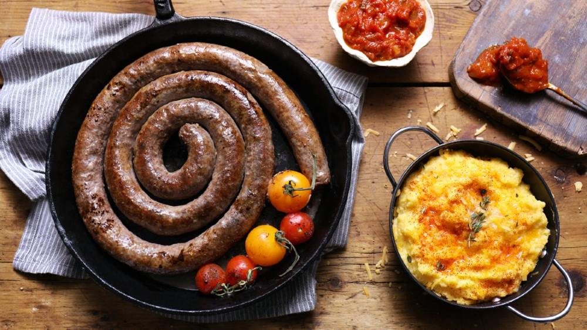

Biltong
O Biltong é um dos principais petiscos da África do Sul, sendo bastante consumido assistindo uma partida de
rugby, cricket ou futebol.
Parecido com a carne-seca brasileira, o Biltong é preparado à base de tiras de carnes, que são salgadas e
deixadas para secar ao sol.
Além de carnes vermelhas, o Biltong também pode ser feito com carnes de caça, como javali, e aves de caça, como
avestruz.
Existe também uma versão do prato em que a carne é cortada no formato de uma salsicha, o Droewors.
Bobotie
O Bobotie é um prato que evoca as raízes multiculturais da África do Sul.
Tido como o favorito de Nelson Mandela, reza a lenda que a iguaria teria sido levada para à África do Sul pelos
holandeses, que, por sua vez, conheceram a receita na Indonésia.
O Bobotie é composto por carne moída, bovina ou de cordeiro, temperada com curry e especiarias, coberta por
mistura de ovo e leite, e assada no forno.
Boerewors
Boerewors, que pode ser traduzido como “salsicha de fazendeiro”, é a salsicha típica da África do Sul.
Preparada a partir de carne bovina, combinada com carne de porco ou cordeiro, e temperada com especiarias, a
Boerewors é tradicionalmente servida grelhada, dentro de um pão parecido com um de cachorro-quente, ou
acompanhada de Pap, um tipo de polenta.
A Boerewors também é item popular do Braai, o churrasco típico da África do Sul.

 


